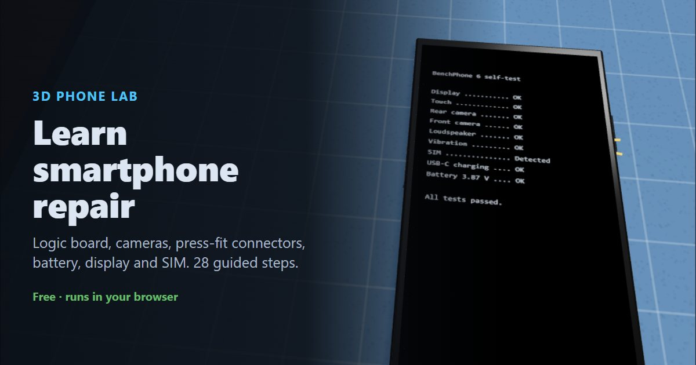

How to repair a phone: smartphone assembly, step by step
This guide walks through putting a smartphone back together from an empty frame: the logic board and cameras, the charging port, loudspeaker and vibration motor, the battery, the display, and finally the SIM tray and a self-test. Every step matches the free 3D phone repair simulator, where you can practise in your browser before you open a real phone. Phones vary a lot between models, so always follow your model's repair manual.
▶ Practise this in the free 3D phone repair simulator
What you need
- Precision screwdriver set (Phillips #000, Pentalobe P2, Tri-point Y000)
- Antistatic wrist strap and mat
- Plastic spudger and opening picks (never metal on connectors)
- Suction cup and a heat source to soften display adhesive
- Magnetic screw mat to keep screws in order
- Replacement battery adhesive strips and display gasket
- SIM eject tool
Contents
Part 1: Prepare the workspace
Put on the ESD vest
Put on an ESD vest or smock. It keeps static from your clothing away from the components.
An ESD smock or vest is standard practice in electronics repair labs.
Put on the antistatic wrist strap
Put on an antistatic wrist strap and clip it to a ground point, such as the GND snap on the mat. A phone's logic board and cameras are easily damaged by static.
Lay the frame on the mat
Lay the phone frame on the antistatic mat, back down, so the empty inside faces you.
Make sure there is no power
Check that the phone is switched off, unplugged, and that the battery is not connected.
A lithium-ion battery can short-circuit and damage the board, or even catch fire, if it's connected while you work. When you take a phone apart, disconnect the battery first. When you put one together, connect it last.
Part 2: Install the logic board & cameras
Place the logic board
Lower the logic board into the top of the frame so its screw holes line up with the posts in the frame.
Secure the logic board
Fasten the logic board with its screws.
Phone screws are tiny and come in different lengths. Keep them on a screw mat in the pattern they came out, so each one goes back in its own hole.
Fit the rear camera module
Seat the rear camera in its bay so the lenses sit over the camera window in the back.
Connect the rear camera
Press the camera flex onto the connector labelled CAM. Line the connector up and press it straight down with a fingertip or a plastic spudger until it clicks. Never use metal tools on these connectors.
Fit the front camera
Seat the front camera in its slot at the top edge.
Connect the front camera
Press the front camera flex onto the connector labelled F-CAM.
Part 3: Install the port, speaker & motor
Fit the charging port
Fit the USB-C charging port into the bottom edge so the port lines up with the opening in the frame.
Secure the charging port
Fasten the charging port with its two screws.
Connect the charging port flex
The port's flex runs up the side to the logic board. Press it onto the connector labelled PORT.
Fit the loudspeaker
Fit the loudspeaker into the bottom-right corner of the frame.
Fit the vibration motor
Fit the vibration motor into the bottom-left corner. It makes contact through spring contacts, so there's no cable.
Part 4: Install the battery
Apply the battery adhesive
Stick new adhesive pull-tab strips into the battery bay. The tabs let you pull the battery out later without prying it.
Do this before the battery goes in. Once the battery is down you can't add adhesive without prying it back out.
Place the battery
Lay the battery onto the adhesive and press it down gently. Don't connect it yet.
Never bend, puncture or pry a lithium-ion battery with metal tools, and never install a swollen one.
Part 5: Fit the display
Apply the display adhesive
Lay a new adhesive gasket around the rim of the frame. It seals the phone against dust and water, so always replace it.
Lay out the display
Place the display beside the phone, face down, along its right-hand edge, like an open book. Its flex cables reach across to the board.
Connect the display flex
Press the display flex onto the connector labelled DISP. Line the connector up and press it straight down with a fingertip or a plastic spudger until it clicks. Never use metal tools on these connectors.
Connect the touch flex
Press the touch (digitizer) flex onto the connector labelled TOUCH.
Connect the battery (last)
With everything else connected, press the battery connector onto BATT.
Connect the battery last. When servicing, it's the first thing you disconnect.
Fit the connector shield
Lay the metal shield plate over the connectors. It stops them working loose.
Screw down the shield
Fasten the shield with the short (1.2 mm) screw. Compare screw lengths before every screw goes in.
A long (3.6 mm) screw in a shield hole punches through the layers of the logic board underneath. This is called long screw damage, and it can kill the phone permanently.
Close the display
Fold the display over onto the frame, then press around the edges so the adhesive bonds.
Part 6: Insert the SIM & test
Insert the SIM tray
Push the SIM tray into the slot on the left edge. The SIM sits in the tray with its cut corner matching the tray.
An upside-down tray lets the SIM fall out or jam in the slot.
Power on
Press and hold the side button to switch the phone on.
Test the phone
Check the display, touch, both cameras, speaker, vibration, SIM and charging before you hand the phone back.
Common mistakes to avoid
- Working with the battery connected
- A connected battery can short and damage the logic board, or start a fire. Disconnect it first when you open a phone, and connect it last when you close one.
- Using a long screw in a short hole
- Phone screws look almost identical. A 3.6 mm screw where a 1.2 mm one belongs punches through the logic board ("long screw damage"). Keep screws in order on a screw mat.
- Prying connectors with metal tools
- A metal tool can short pins or tear a connector off the board. Use a plastic spudger or a fingertip, and press straight down without rocking.
- Plugging a flex into the wrong connector
- Many board connectors look alike. Check the label (CAM, F-CAM, DISP, TOUCH, BATT) before you press a flex down.
- Reusing the old display adhesive
- The gasket keeps out dust and water. Once you've opened the phone, its water resistance is gone until you lay new adhesive.
- Installing the battery without adhesive strips
- Without pull-tab strips, the next repair means prying the battery out, which can puncture it.
- Installing a swollen battery
- A swollen lithium-ion battery is a fire risk. Never install one, and recycle it properly.
- Forgetting the connector shield
- Without the shield, the press-fit connectors can work loose from drops and vibration.
- Inserting the SIM upside down
- Match the SIM's cut corner to the tray. An upside-down tray can jam in the slot.
Frequently asked questions
What is long screw damage?
Phone screws come in very similar sizes. A screw that is too long for its hole can punch through the layers of the logic board underneath and permanently damage the phone. Keep every screw in order as you remove it.
Why do you disconnect the battery first when repairing a phone?
A connected battery can short-circuit components while you plug in or unplug other connectors. Disconnect it first when you open a phone, and connect it last when you close one.
Do I need new adhesive after opening a phone?
Yes. The display gasket seals the phone against dust and water, and the battery strips let you remove the battery safely. Both should be replaced every time.
What tools do you need to repair a smartphone?
A precision screwdriver set (often Pentalobe, Phillips and Tri-point bits), plastic spudgers and opening picks, a suction cup, a heat source for adhesive, an antistatic wrist strap and a screw mat.
Is a phone still waterproof after a screen replacement?
Only if a new adhesive gasket is fitted correctly. Even then, most repairers don't guarantee the original water-resistance rating.
Can I practise phone repair without a real phone?
Yes. The free Phone Lab 3D simulator runs in your browser and walks you through 28 steps, catching mistakes like the wrong screw length, a flex on the wrong connector or an upside-down SIM tray.
Reading is one thing. Doing it without breaking anything is another.
▶ Practise all 28 steps in 3DNext: How to repair a tablet, step by step · How to build a PC · How to assemble a laptop